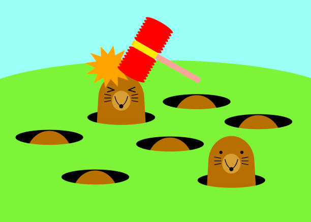

Regras simples
Durante a partida, as toupeiras aparecem de forma aleatoria no jardim. O jogador precisa clicar nos buracos corretos para marcar pontos e evitar penalidades por erros e perdas.
O objetivo e simples: acertar as toupeiras o mais rapido possivel para construir a maior pontuacao antes do tempo acabar.

Durante a partida, as toupeiras aparecem de forma aleatoria no jardim. O jogador precisa clicar nos buracos corretos para marcar pontos e evitar penalidades por erros e perdas.
Terminar a partida com o maior saldo possivel e registrar o resultado no ranking Top 10.